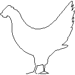

Cut chicken into strips. Place in glass bowl. Combine soy sauce and seasonings, pour over chicken, coating well. Refrigerate for at least 30 minutes. Add beaten egg - coating chicken. Combine bread crumbs and seeds in pie plate. Coat chicken pieces with this mixture. On a foil-lined pan sprayed with Pam, bake at 400° approximately 20 minutes. Serve immediately or refrigerate and serve cold. Serves 5 to 7.